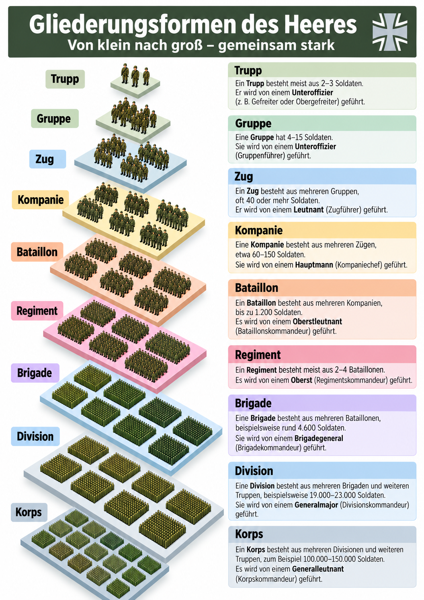

Aufgabe: Sehen Sie sich die Grafik genau an.
Wie ist das Heer gegliedert? Betrachten Sie die neun Gliederungsformen von Trupp bis Korps. Lesen Sie die Erklärungen rechts. Achten Sie darauf, welche Einheiten aus anderen Einheiten bestehen und wie viele Soldaten sie ungefähr haben.
Wenn Sie die Grafik gelesen haben, öffnen Sie oben die Registerkarte 2 · Zuordnen.

Hinweis: Größen und Führungsdienstgrade können je nach Auftrag und Verband unterschiedlich sein.
Aufgabe 1: Zuordnen
Ordnen Sie jeder Gliederungsform die passende Erklärung zu. Wählen Sie im Menü den richtigen Buchstaben aus.
Aufgabe 2: Richtig oder falsch?
Lesen Sie die Aussagen. Entscheiden Sie, ob sie richtig oder falsch sind, und kreuzen Sie an.
Aufgabe 3: Lückentext
Setzen Sie die passenden Wörter in die Lücken ein. Jedes Wort darf nur einmal verwendet werden. Die Wortliste bleibt beim Scrollen sichtbar.